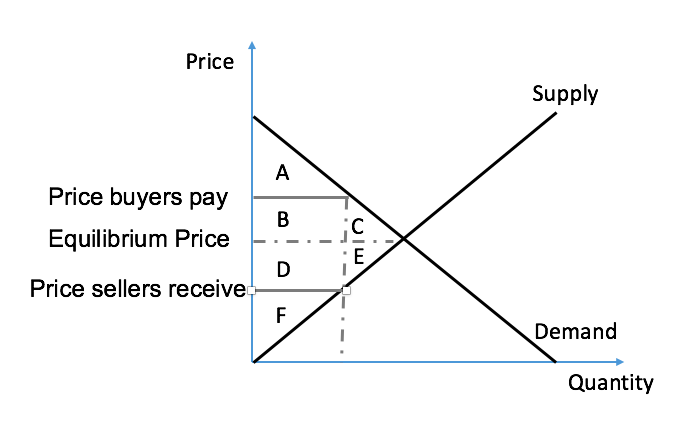

Demand and supply
Supply Curve¶
Determinants of Supply¶
The supply curve illustrates how the quantity supplied responds to changes in various factors. Below is a breakdown of the determinants:
| Determinants | Effect on Curve |
|---|---|
| Price | Move along curve (no shift) |
| Input price | Shift curve |
| Technology | Shift curve |
| Expectations | Shift curve |
| Number of sellers | Shift curve |
Note
When price decreases while income remains constant, consumers' purchasing power increases.
Elasticity Concepts¶
Price Elasticity of Demand (PED)¶
Formula:
Types of Price Elasticity of Demand¶
-
Perfectly Elastic Demand \(PED = \infty\): The demand curve is a horizontal line.
-
Relatively Elastic Demand
\(PED > 1\): Percentage change in quantity demanded exceeds percentage change in price (\(\Delta QD\% > \Delta P\%\)). -
Unit Elastic Demand
\(PED = 1\): Percentage change in quantity demanded equals percentage change in price (\(\Delta QD\% = \Delta P\%\)). -
Relatively Inelastic Demand
\(0 < PED < 1\): Percentage change in quantity demanded is less than percentage change in price (\(\Delta QD\% < \Delta P\%\)). -
Perfectly Inelastic Demand
\(PED = 0\): The demand curve is a vertical line.
Total Revenue and Elasticity¶
- \(Price \propto TR \implies \text{Inelastic}\)
- \(Price \propto \frac{1}{TR} \implies \text{Elastic}\)
- \(Price = C \implies \text{Unit Elastic}\)
2.2 Price Elasticity of Supply (PES)¶
Formula:
Simple Formula¶
- \(\Delta \text{Quantity Supplied\%} = \frac{Q_2 - Q_1}{Q_1}\)
- \(\Delta \text{Price\%} = \frac{P_2 - P_1}{P_1}\)
Mid-Point Formula¶
- \(\Delta \text{Quantity Supplied\%} = \frac{Q_2 - Q_1}{\frac{Q_2 + Q_1}{2}}\)
- \(\Delta \text{Price\%} = \frac{P_2 - P_1}{\frac{P_2 + P_1}{2}}\)
Types of Price Elasticity of Supply¶
-
Perfectly Elastic Supply
\(PES = \infty\): The supply curve is a horizontal line. -
Relatively Elastic Supply
\(PES > 1\): Percentage change in quantity supplied exceeds percentage change in price (\(\Delta QS\% > \Delta P\%\)). -
Unit Elastic Supply
\(PES = 1\): Percentage change in quantity supplied equals percentage change in price (\(\Delta QS\% = \Delta P\%\)). -
Relatively Inelastic Supply
\(0 < PES < 1\): Percentage change in quantity supplied is less than percentage change in price (\(\Delta QS\% < \Delta P\%\)). -
Perfectly Inelastic Supply
\(PES = 0\): The supply curve is a vertical line.
2.3 Income Elasticity of Demand (YED)¶
Formula**: $$ YED = \frac{\Delta \text{Quantity\%}}{\Delta \text{Income\%}} $$
- \(YED > 0 \implies \text{Normal Good}\)
- \(YED < 0 \implies \text{Inferior Good}\)
2.4 Cross-Price Elasticity of Demand (XED)¶
Formula:
- \(XED > 0 \implies \text{Substitutes}\)
- \(XED < 0 \implies \text{Complements}\)
Market Equilibrium¶
Equilibrium Price¶
The equilibrium price is the point where the Demand Curve and Supply Curve intersect.
Changes in Supply and Demand¶
| No Change in Supply | Increase in Supply | Decrease in Supply | |
|---|---|---|---|
| No Change in Demand | \(P=\), \(Q=\) | \(P \downarrow\), \(Q \uparrow\) | \(P \uparrow\), \(Q \downarrow\) |
| Increase in Demand | \(P \uparrow\), \(Q \uparrow\) | \(P ?\), \(Q \uparrow\) | \(P \uparrow\), \(Q ?\) |
| Decrease in Demand | \(P \downarrow\), \(Q \downarrow\) | \(P \downarrow\), \(Q ?\) | \(P ?\), \(Q \downarrow\) |
Consumer and Producer Surplus¶
Consumer Surplus¶
- Willingness to Pay (WTP): The maximum price a consumer is willing to pay for a good or service.
- Marginal Buyer: The consumer who leaves the market first if the price rises further.
Producer Surplus¶
- Marginal Seller: The producer who leaves the market first if the price decreases further.
Total Surplus¶

Government Intervention in Markets¶
Price Ceiling¶
- Effective only when actual price > price ceiling.
- Causes a shortage:
$$ \text{Shortage} = QD - QS $$ - Protects consumers.
Price Floor¶
- Effective only when actual price < price floor.
- Causes a surplus:
$$ \text{Surplus} = QS - QD $$ - Protects producers.
Taxes¶
- Tax burden depends on elasticity:
$$ \text{Inelastic} \implies \text{Higher tax burden} $$ - Size of tax:
$$ \text{Size of Tax} = \text{Price of Demand} - \text{Price of Supply} $$ - Tax revenue:
$$ \text{Tax Revenue} = T \cdot Q $$
Impact of Taxes on Surplus¶
| Without Tax | With Tax | Change | |
|---|---|---|---|
| Consumer Surplus | \(A + B + C\) | \(A\) | \(-(B + C)\) |
| Producer Surplus | \(D + E + F\) | \(F\) | \(-(D + E)\) |
| Tax Revenue | None | \(B + D\) | \(+(B + D)\) |
| Total Surplus | \(A + B + C + D + E + F\) | \(A + B + D + F\) | \(-(C + E)\) |
